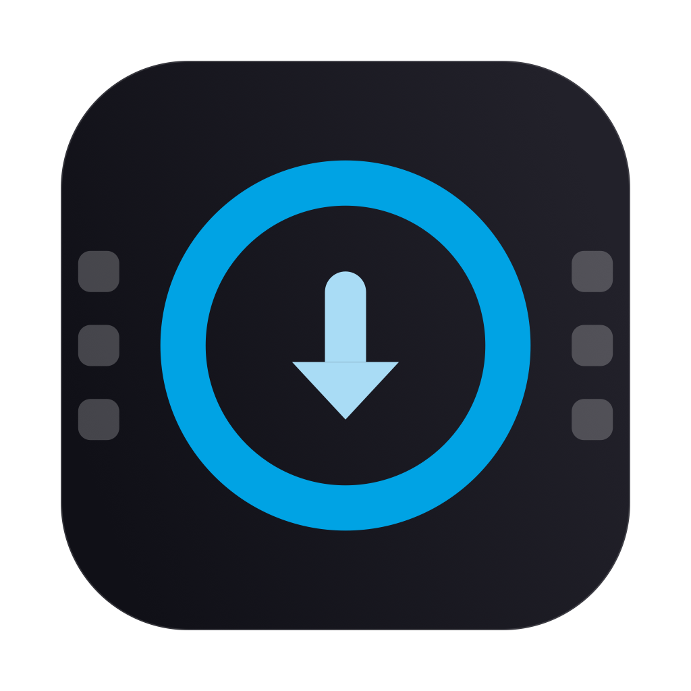

You pressed the button when it happened. QuiX finds those clips and keeps them apart, while it imports the rest of your session. Nothing to click.
100% free · No account · No ads · For Mac
Something good happens — a jump, a wave, a turn. A short press on the button on the side of your GoPro, and the moment is marked.
The camera over USB-C, switched on. Or the memory card in a reader. QuiX starts on its own.
Your whole session is there, and the moments you marked are already waiting in their own folder.
The end of an import: three marked takes, already waiting in Highlights.
While your GoPro is recording, give a short press to the button on its side — the one you use to switch it on. The camera keeps filming and writes the moment inside the video file. You can also just say “GoPro, HighLight”, hands free.
It only works for presses made while filming. Highlights added afterwards in the Quik phone app stay in the app, and QuiX cannot see them.
Plug in and the import is already running. No window to find, no folder to choose again.
Every clip is checked after copying. If something went wrong, QuiX tells you instead of pretending it worked.
QuiX only empties it when you press the button — and only once every clip is safely on your Mac.
No price, no trial, no subscription, no ads. Download it and it is yours.
Click a screen to enlarge it
Your GoPro over USB-C, or its card in a reader. Your footage is never modified.
Pick the folder you already use. Each import gets its own dated folder, with Highlights and Clips inside.
Once for the camera, once for the card reader. That is the whole setup.
QuiX sits in the menu bar. One click tells you where the import is, and what it found. Go make a coffee.
The menu bar, once an import is done
No price, no trial, no subscription, no ads. Just tell me where to send the link.
For macOS 15 and later · Your GoPro over USB-C, or its card in a reader